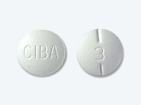
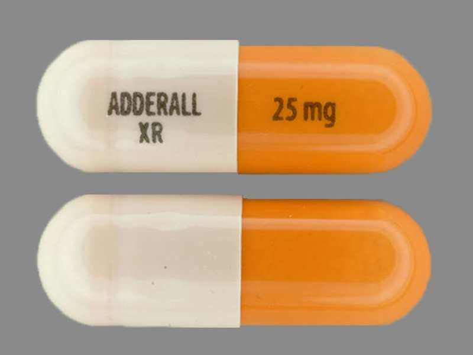
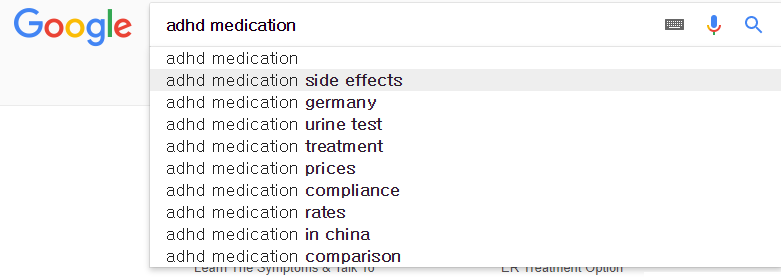

Medication
What is Medication for ADHD?
Stimulants are the most common type of medication prescribed for the attention deficit hyperactive disorder.
Stimulants such as Ritalin and Adderall are the most common prescribed medication for the patients. Stimulants reduce hyperactivity and impulsivity and help the patients to focus.
However, the medication has a rebound effect which only works for the short-term.
The medication for ADHD overdose is a serious problem which could cause death to patient. Moreover, its long-term side effects could damage the patients’ brains and bodies.
Adderall includes amphetamine and Ritalin as methylphenidate.
Medication Types
They are most prescribed drugs in the United States.
In July 2013, the National Institute for Health and Care Excellence(NICE) issued a reminder to avoid methyphenidate in children and young people.
Renoux C.,(2016).
Ritalin

Name: Ritalin
Type: Tablet
Lasts Up: 4 Hours
Main Component: Methylphenidate
AdderalXR

Name: AdderalXR
Type: Capsule
Lasts Up: 8 Hours
Main Component: Modified Amphetamine Mixture
Adderal

Name: Adderal
Type: Tablet
Lasts Up: 4 Hours
Main Component: Modified Amphetamine Mixture
Misconception of medication for the ADHD
Medications for the ADHD could cause several side effects such as sleep problem, decreased appetite, delayed growth, headaches, stomachaches, Tics, and moodiness.
Side effects are the most worried problem before selecting a treatment for the ADHD patients.

However, many patients are hesitating about taking the medication because of complicated reasons.


Many researches show negative side effects of the ADHD medication, but some researches show that the medication is safe to use.
So, what Should we believe?
Report Result
I researched two report results about medication for the ADHD. Dr. Christel Renoux conducted the study which used the UK CPRD database.
It is one of the world’s largest electronic databases of anonymized primary care medical that records on a population over 13 million patients enrolled with more than 680 general practices. The study defined all patients between 6 to 45 years of old.
This report proves that the prescription rates for the ADHD medication increased dramatically from 2000 to 2015.
Also, most of the prescriptions contain Methylphenidate which remained the most prescribed
drug over the years, particularly in children and young adults. Renoux C.,(2016).

Another report conducted by Zheng Chang. “This diagnosis is based on 38,752 ADHD born between 1960 and 1998 in Sweden.".

Concomitant occurrence of depression was 36% less common during periods when patients received the ADHD medication compared with periods when they did not receive the medication.
Moreover, the ADHD medication reduced the rate of depression by 20% even within individuals.
Also, medication was associated with a reduced risk for subsequent and concurrent depression.
Chang Z.,(2016).
In conclusion, the medications for ADHD, especially Methylphenidate, is well known of its association with the high rates of psychiatric comorbidity that includes depression. However, it actually prevents people from getting psychiatric comorbidity. Although it could cause some side effects, they are common symptoms which could happen to people without ADHD. The medication treatment for ADHD is a treatment which does not give a serious damage to patients.
However, if you are worried to take the medicine, then avoid to take the medicine with Methylphenidate.